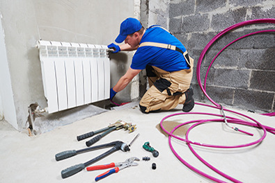

La caldera es el corazón de la calefacción y del agua caliente de tu casa. Si tiene muchos años, te está costando dinero cada mes sin que lo notes. Te explicamos cuándo toca cambiarla y cómo ahorrar en la factura mientras tanto.
No esperes a que falle en pleno enero. Cambia la caldera cuando veas alguna de estas señales:
Una caldera de condensación moderna aprovecha casi todo el calor del gas y puede ahorrarte entre un 25% y un 30% de gas al año. Además, en muchas comunidades hay ayudas y subvenciones para el cambio. En la mayoría de casos, el cambio se paga solo en pocos años.
💡 Consejo del profesional: aunque no la cambies, haz la revisión anual obligatoria. Una caldera bien mantenida gasta menos, funciona mejor y dura más. En Multiservicios Apolo BCN hacemos mantenimiento y revisiones de calderas en Barcelona y alrededores.
Revisión, reparación y cambio de calderas en Barcelona y alrededores. Te asesoramos sin compromiso.